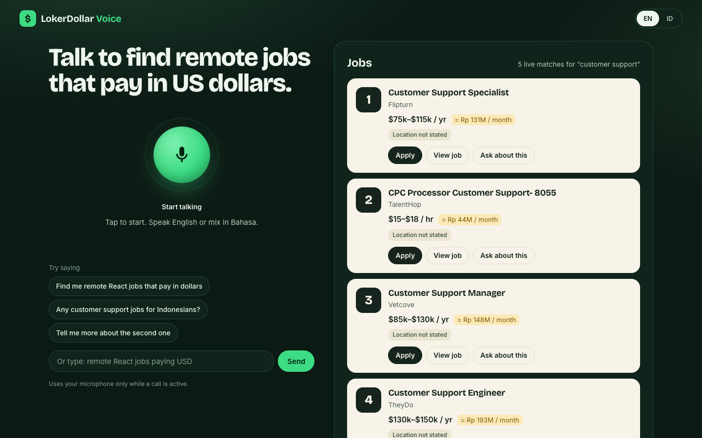

A real-time voice agent that searches live remote jobs for Indonesian workers, reads the best matches aloud, answers follow-ups, and lets you cut in at any time.
The problem
"Remote" often means "remote, US only". Eligibility is hidden in the fine print.
"$85k a year" means little until it becomes "about Rp 117 million a month".
People think in Bahasa and mix in English: "cari kerja remote React yang bayar dolar".
Demo

How it uses AssemblyAI
| Temporary tokens | Worker mints a single-use token (60 s, 10-min session cap). The API key never reaches the browser. |
| Client-side function tools | search_jobs and get_job in interactive mode. tool.result is sent exactly when reply.done is the latest event. |
| Barge-in | On reply.done: interrupted the client drops queued audio and stale tool results immediately. |
| Key terms + transcription prompt | Biases recognition toward React, Figma, Shopify and "cari kerja", "lowongan", "gaji". |
| Word-level agent transcript | transcript.agent.delta lights up the card the agent is talking about. |
What makes it feel live
Tools run in the browser, so the job cards appear as the agent says "let me check", before it reads the results.
When the agent says "number two" or a company name, that card lights up in time with the audio.
Ask about this on a card and typed messages go into the same conversation (conversation.message + reply.create).
Every job shows a monthly IDR estimate, and the agent says it: "about 131 million rupiah a month".
Open to Indonesia, not stated, or region-locked. "LATAM applicants only" is flagged and ranked lower.
URLs are removed before the model sees results, so it cannot make up a link. Apply links come from the API unchanged.
Business value
Roadmap